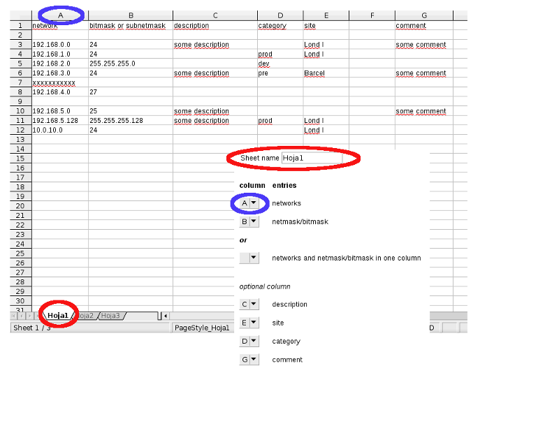

global configuration parameters
"ping" timeout - Ping timeout for "host check" and for manual synchronization against DNS. These parameter only takes effect with patched Ping::External Perl Modul.
The manual synchronization updates all entries of a network via PTR queries against the DNS. If an IP address can be resolved to a hostname the entry will be added to the database. If you have generic rDNS entries configured, automatic actualization will update the database with this entries. To avoid that the database would be filled with this type of entries type, insert an ignore-string and set ignore generic auto to "yes". If the rDNS entry matches ignore-string or "generic auto PTR entry" (see ignore generic auto) and the address answers to "ping", the hostname would be set to "unknown". If the address doesn't answer to ping the entry would be ignored.
ignore - Generic rDNS entries to ignore when synchronizing a network. If your generic rDNS entries doesn't match "generic auto PTR entries" (see ignore generic auto) set here the strings to ignore. Example: rDNS entry: dhcp-2.3.5.2.gestioip.net -> ignore: dhcp-
ignore generic auto - Set this value to "no" if the update script should NOT ignore DNS entries that match auto generated generic DNS PTR entries. Example: IP: 1.2.3.4 -> generic auto PTR entries generated by GestióIP: 4-3-2 and 2-3-4. With ignore generic auto set to "yes" GestióIP ignores IP's that match generic auto PTR entries
generic-dynamic name - set here generic names (assigned via DHCP) which should be ignored by manual network synchronization against DNS, Example: PC-,LAP- (if dynamically assigned names are like PC-001, PC-002, LAP-001, LAP-002). This can be useful to avoid that updates of automatic synchronization against OCS would be overwritten - coma separated list, case sensitive
max number parallel processes - Maximal number of parallel processes to fork when synchronizing a network manually
Delete AUTO audit events older than... - To delete AUTOMATIC audit events from the database. Automatic events are events which are generated from the automatic actualization (ip_update_gestioip_dns.pl, ip_update_gestioip_ocs.pl and get_networks_snmp.pl)
Delete MAN audit events older than... - To delete MANUAL audit events from the database. Manual events are all events which are generated from actions made via web-frontend
smallest allowed BM - Networks with a bitmask smaller than the value of smallest_bm can't be listed and don't have host entries.
manual synchronization
Mark radio button all sheets to import all sheet of networks.xls
Mark radio button sheet name and indicte a sheet name to import a specific sheet from networks.xls
Mark radio button sheets and introduce the sheet numbers to import from networks.xls (Example: To import "Hoja1" and "Hoja3" from the spreadsheet below introduce "1,3")
netmask/bitmask - Column with netmask or bitmask (columns with mixed netmask and bitmask are supported, too). Example format supported entries: 24, 255.255.255.0 - entries which doesn't match the format will be ignored
networks and netmask/bitmask in one column - Column with both, network and net/bitmask. If your spreadsheet contains one column with both, networks and net/bitmasks, leave networks and netmask/bitmask blank. Examples format supported entries: 1.1.1.0/24, 1.1.1.0/255.255.255.255, 1.1.1.0-24, 1.1.1.0 - 24, 1.1.1.0 xyz 24 - entries which doesn't match the format will be ignored
description - Column with descriptions - optional
site - Column with sites. The sites must exist in GestióIPs database. If the site doesn't exists it will be ignored - optional
category - Column with categories. The category must exist in GestióIPs database. If the category doesn't exists it will be ignored - optional
comment - Column with comments - optional
networks - Column with networks. Example format supported entries: 192.168.0.0 - entries which doesn't match the format will be ignored
